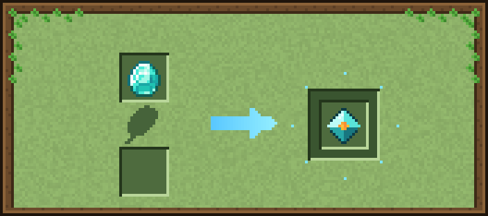
Cristal Instável
Conversão simples: só o diamante, sem catalisador. Gasta combustível vegetal.
Entrada: 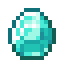
Resultado: Cristal Instável
Tempo: 10 segundos
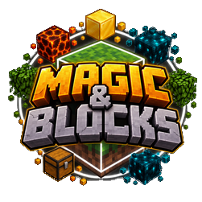
Magic & Blocks wiki❤ ApoiarTodas as receitas do Infusor, como aparecem na tela dele: entrada em cima, catalisador embaixo e o resultado à direita.

Conversão simples: só o diamante, sem catalisador. Gasta combustível vegetal.
Entrada: 
Resultado: Cristal Instável
Tempo: 10 segundos
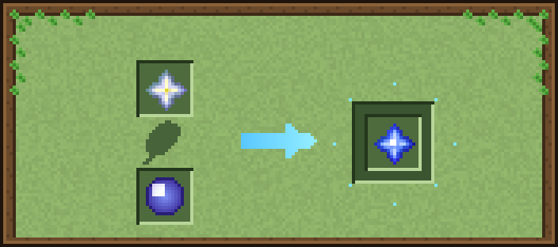
Cria a Estrela de Mana.
Entrada: Estrela do Nether
Catalisador (embaixo): Orbe de Mana
Resultado: Estrela de Mana
Tempo: 30 segundos
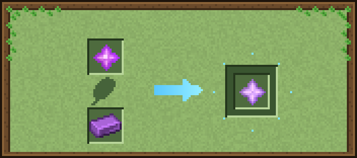
A Estrela de Mana Despertada vira a Estrela do Vazio.
Entrada: Estrela de Mana Despertada
Catalisador (embaixo): 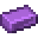
Resultado: Estrela do Vazio
Tempo: 40 segundos
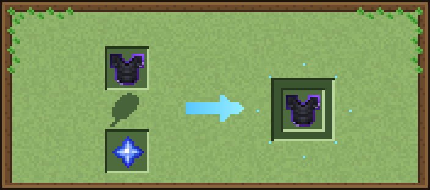
+1 de defesa por estrela, até +5. Com a Estrela Despertada vai de +5 até +10, e com a Estrela do Vazio de +10 até +15.
Entrada: Peitoral de Manilium
Catalisador (embaixo): Estrela de Mana
Resultado: Peitoral de Manilium
Tempo: 15 segundos
Vale para qualquer peça de Manilium e para a armadura da Besta Celestial.
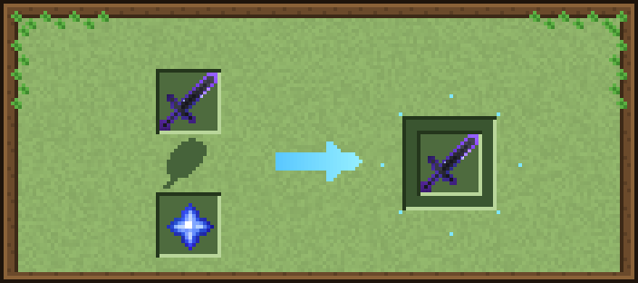
+1 de dano por estrela, até +50. Com a Estrela Despertada vai até +120 e com a Estrela do Vazio até +150.
Entrada: Espada de Manilium
Catalisador (embaixo): Estrela de Mana
Resultado: Espada de Manilium
Tempo: 15 segundos
Vale para a Espada de Manilium e a Lâmina do Caos.
A Espada de Manilium vazia recebe o Bloco Mágico na guarda e ganha os poderes dele.
Entrada: Espada de Manilium
Catalisador (embaixo): Bloco de Fogo
Resultado: Espada de Manilium
Tempo: 15 segundos
Qualquer Bloco Mágico serve (na imagem, Fogo).
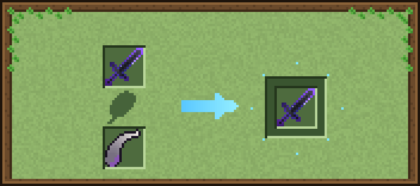
A Espada de Manilium fica duas mãos: na segunda mão, o botão direito bate como na principal.
Entrada: Espada de Manilium
Catalisador (embaixo): 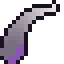
Resultado: Espada de Manilium
Tempo: 20 segundos
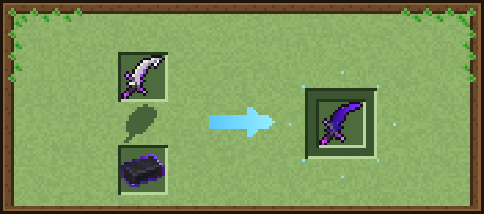
A Espada da Besta vira a Espada da Besta Celestial (60 de dano, galáxia roxa). Mantém encantamentos e nome.
Entrada: 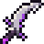
Catalisador (embaixo): 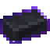
Resultado: Espada da Besta Celestial
Tempo: 30 segundos
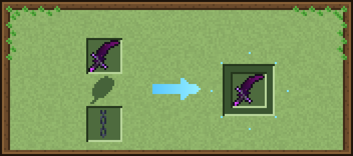
Skin da Lâmina do Caos no estilo das Lâminas do Caos: lâmina curva escura com veios vermelhos incandescentes, cabo enrolado e uma corrente pendurada. Na Fúria os veios viram uma galáxia vermelha. Mantém dano, encantamentos e nome.
Entrada: Lâmina do Caos
Catalisador (embaixo): 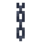
Resultado: Lâmina do Caos
Tempo: 20 segundos
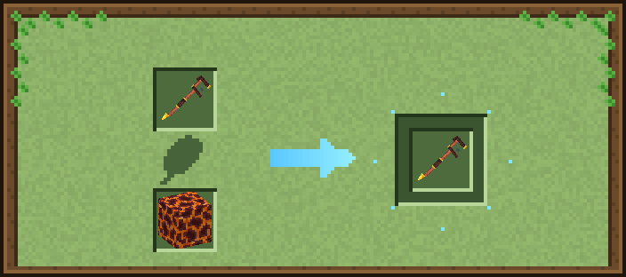
O Cajado Ancestral vazio recebe o Bloco Mágico e ganha o poder dele.
Entrada: Cajado Ancestral
Catalisador (embaixo): Bloco de Fogo
Resultado: Cajado Ancestral
Tempo: 15 segundos
Qualquer Bloco Mágico menos Baú e Slime (na imagem, Fogo).
O Cajado Ancestral vira o Cajado Arcano: carrega mais rápido e pode devolver mana. Mantém o bloco e os encantamentos.
Entrada: Cajado Ancestral
Catalisador (embaixo): Pedra de Mana
Resultado: Cajado Arcano
Tempo: 30 segundos
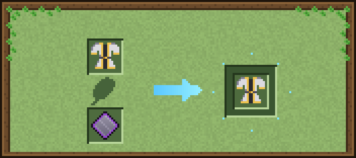
A peça Elemental ganha +2 de armadura, +1,5 de resistência e conta como peça de Leviatã. Mantém o elemento e os encantamentos.
Entrada: Peitoral Elemental
Catalisador (embaixo): 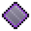
Resultado: Peitoral Elemental
Tempo: 25 segundos
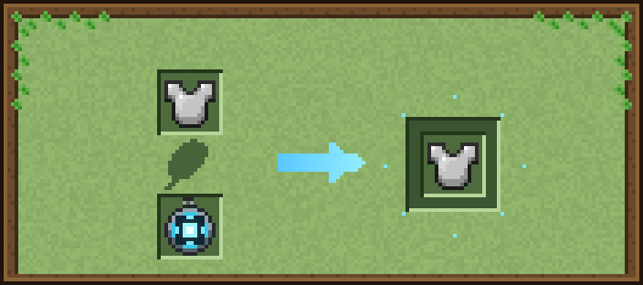
O Conversor de Almas fica embutido no peitoral.
Entrada: iron_chestplate
Catalisador (embaixo): Conversor de Almas
Resultado: iron_chestplate
Tempo: 15 segundos
Qualquer peitoral serve.
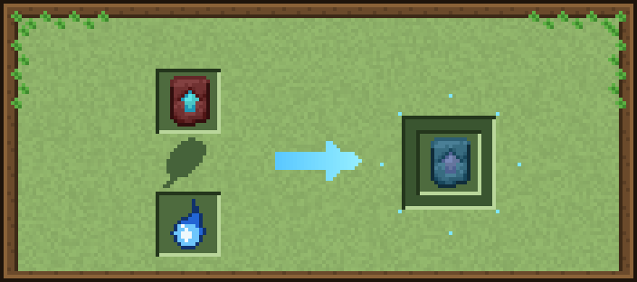
Cria o Molde de Melhoria de Manilium.
Entrada: 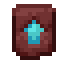
Catalisador (embaixo): Essência de Mana
Resultado: Molde de Ferraria
Tempo: 20 segundos
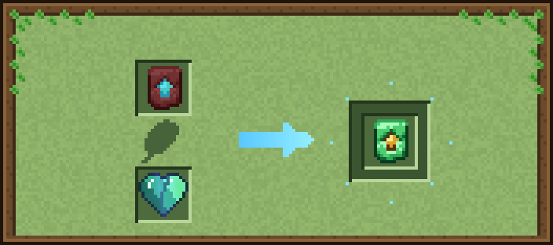
Cria o Molde de Esmeralda Real.
Entrada: Molde de Melhoria de Netherita
Catalisador (embaixo): Coração de Esmeralda
Resultado: Molde de Esmeralda Real
Tempo: 30 segundos
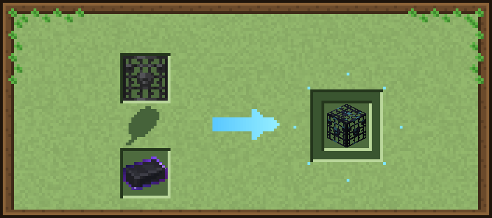
O Spawner sem Vida vira o Spawner de Manilium.
Entrada: 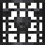
Catalisador (embaixo): Barra de Manilium
Resultado: Spawner de Manilium
Tempo: 30 segundos
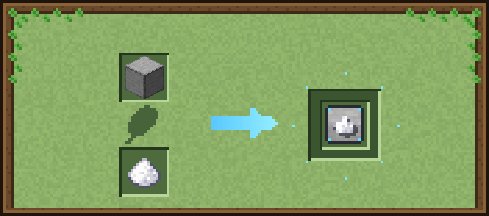
Melhoria do Spawner de Manilium: mais rápido.
Entrada: 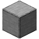
Catalisador (embaixo): 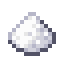
Resultado: Melhoria de Spawner: Velocidade
Tempo: 15 segundos
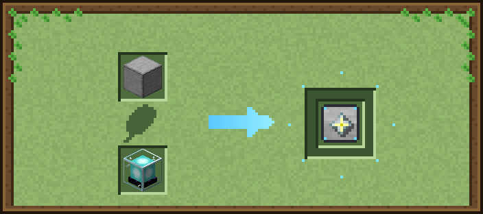
Melhoria do Spawner de Manilium: funciona sem jogador perto.
Entrada: Pedra Lisa
Catalisador (embaixo): 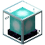
Resultado: Melhoria de Spawner: Carregador de Chunk
Tempo: 30 segundos
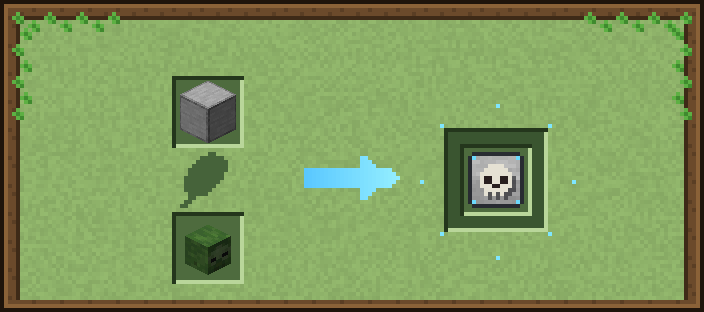
Melhoria do Spawner de Manilium: mais criaturas por vez.
Entrada: Pedra Lisa
Catalisador (embaixo): 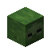
Resultado: Melhoria de Spawner: Quantidade
Tempo: 20 segundos
Qualquer cabeça de criatura serve.
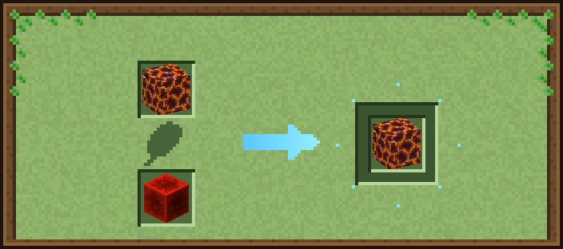
O Bloco de Fogo fica na variante vermelha: todos os ataques ficam vermelhos.
Entrada: Bloco de Fogo
Catalisador (embaixo): 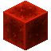
Resultado: Bloco de Fogo
Tempo: 15 segundos
O Bloco de TNT fica ativo: a TNT arremessada e a nuclear quebram blocos.
Entrada: Bloco de TNT
Catalisador (embaixo): TNT
Resultado: Bloco de TNT
Tempo: 20 segundos
O Bloco de Água vira o Bloco de Gelo.
Entrada: Bloco de Água
Catalisador (embaixo): Gelo Azul
Resultado: Bloco de Gelo
Tempo: 20 segundos
Qualquer muda vira a Muda de Mana.
Entrada: Muda (qualquer)
Catalisador (embaixo): Essência de Mana
Resultado: Muda de Mana
Tempo: 15 segundos
Qualquer muda serve (menos a própria Muda de Mana).